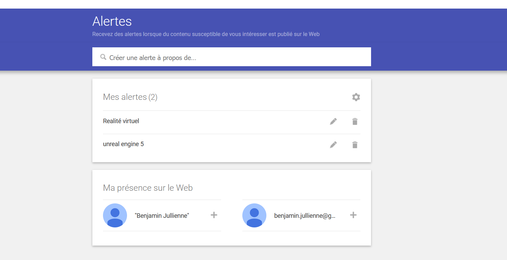

Google Alert est un outil de veille automatisé proposé par Google qui permet de recevoir des
notifications par e-mail lorsqu'un nouveau contenu sur un sujet spécifique est publié sur le web. L'outil
utilise l'algorithme de recherche de Google pour trouver des pages web, des actualités, des blogs, des forums,
des vidéos, etc., qui correspondent aux termes de recherche spécifiés par l'utilisateur.
Voici le fonctionnement détaillé de Google Alert :
Création d'une alerte : Pour utiliser Google Alert, l'utilisateur doit se rendre
sur la page d'accueil de l'outil et saisir les termes de recherche pour lesquels
il souhaite recevoir des notifications. Il peut s'agir d'un mot-clé, d'une phrase,
d'un nom de marque, d'un sujet, d'une entreprise, d'un produit, etc. L'utilisateur
peut également préciser la langue, le pays, la fréquence et le type de résultats souhaités.
Recherche des résultats : Une fois que l'utilisateur a créé une alerte, Google commence
à surveiller les pages web en temps réel à la recherche de nouveaux contenus qui correspondent
aux termes de recherche spécifiés. Pour cela, Google utilise son algorithme de recherche pour trouver
des pages web, des actualités, des blogs, des forums, des vidéos, etc.
Filtrage des résultats : Après avoir trouvé les résultats, Google les filtre pour s'assurer qu'ils
sont pertinents et non-spammy. Le système de filtrage utilise des critères tels que la qualité du contenu,
l'autorité du site, la date de publication, la langue, etc.
Envoi des notifications : Lorsque Google trouve un nouveau contenu qui correspond aux termes de recherche
spécifiés par l'utilisateur, il envoie une notification par e-mail contenant un lien vers le nouveau contenu.
L'utilisateur peut également choisir de recevoir des notifications par RSS ou sur son téléphone portable.
Gestion des alertes : L'utilisateur peut gérer ses alertes en les modifiant, en les supprimant ou en en
ajoutant de nouvelles. Il peut également choisir de recevoir toutes les notifications ou seulement les meilleures.
En somme, Google Alert est un outil pratique pour surveiller les termes de recherche spécifiques et
recevoir des notifications par e-mail, RSS ou sur le téléphone portable lorsque de nouveaux contenus
correspondant à ces termes sont publiés sur le web. L'outil utilise l'algorithme de recherche de Google
pour trouver et filtrer les résultats pertinents, ce qui permet à l'utilisateur de gagner du temps et de
rester informé sur les sujets qui l'intéressent.
